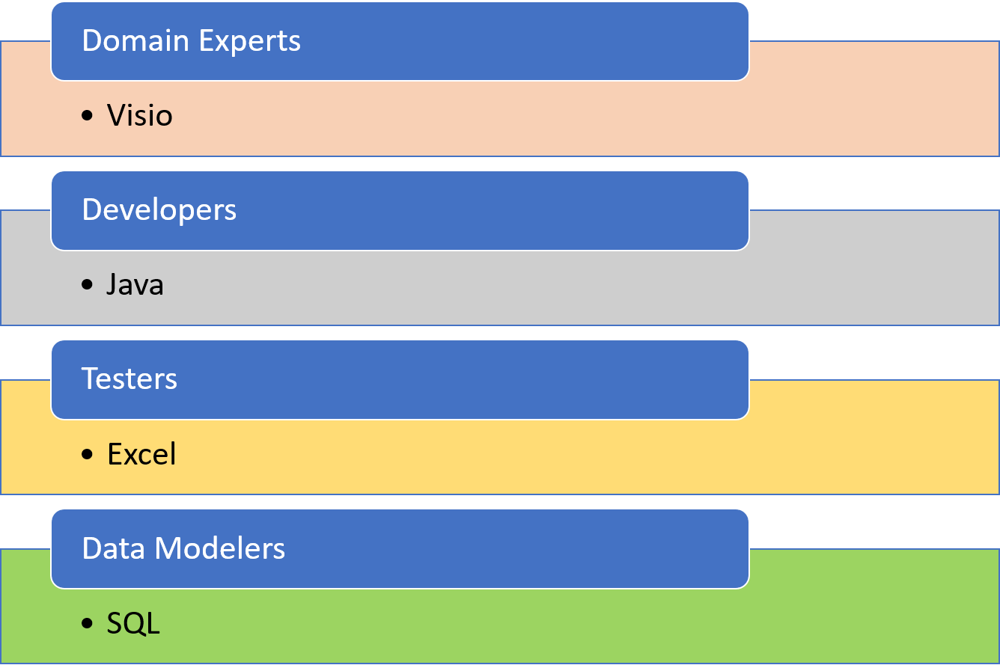

Open Source, Model Driven , Collaborative Tools for BIRD.
What is BIRD?
Introduction
At the core of Eclipse Free BIRD Tools is CoCaLiMo, this is a Collaborative Calculation Lineage Model.
CoCaLiMo is used to provide one common model for calculation, to be used between different disciplines, specifically data modellers, developers, testers and domain experts.
An extension to CoCaLiMo called 'CoCaLiMo for SMCubes' is used to support the European Central Banks' BIRD project.
Aside from CoCaLiMo for SMCubes, Eclipse Free BIRD Tools also provides a set of tools to work with the Logical Data Model for BIRD.
What is CoCaLiMo?
From experience in the creation of calculation engines for regulatory logic we often find the following situation where different disciplines all store their knowledge
in different formats and tools which cannot interact. Like this:

Therefore things get lost in translation.
Also when a data modellers changes the data model (for example to rename a column or attribute), there is no immediate communication that this affects another discipline ,
such as a test or computation which uses that attribute/column.
In CoCaLiMo all disciplines store their information in one model like this:

More detail is provided below on the different aspects of CoCaLiMo.
Collaborative
CoCaSon (Collaborative Calculation Simple Object Notation) provides an easy to understand text representation for instances of the Collaborative Calculation Model, familiar to users of JSON, and easy to use with collaborative software for source control and issue tracking.
Calculation
CoCaLiMo aims to be integratable with calculation languages such as the VTL language for describing transformations in BIRD.
Lineage
CoCaLiMo aims to track the lineage between regulatory artefacts like regulatory rule book text, regulatory tests, and data models
Model
CoCaLiMo is a model, its defined as a UML class diagram, and has documentation for each class and attribute, it has no operations.